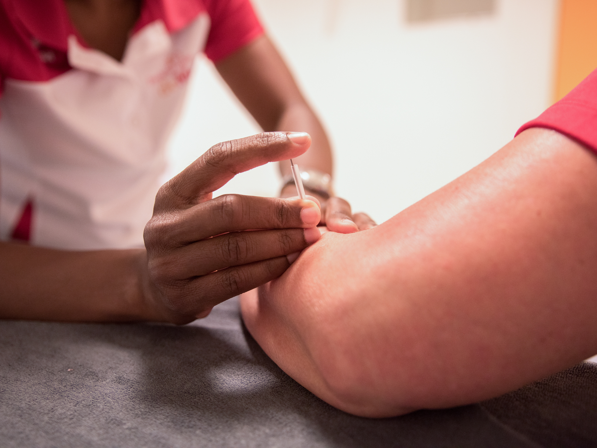

Dry needling
Dry needling is een behandelmethode waarbij door middel van een speciale techniek spieren worden aangeprikt en welke op die manier snel en langdurig ontspannen raken. Dry needling gebruikt een ‘droge’ (dry) acupunctuurnaald en er wordt dus geen vloeistof in de spier gespoten. Bij klassieke acupunctuur worden vaak oppervlakkig meerdere naalden gedurende langere tijd in het lichaam gezet. Dry needling gebruikt eenzelfde soort naaldje, maar die is specifiek gericht op zogenaamde ‘triggerpoints’ die kort gestimuleerd worden.
Bij welke klachten kan dry-needling helpen?
Tijdens een eerste behandeling onderzoekt en analyseert de fysiotherapeut uw klachten. Hij kijkt naar de spieren die de pijn mogelijk veroorzaken en gaat op zoek naar ‘triggerpoints’. Deze knopen zal de fysiotherapeut behandelen om de spieren te ontspannen.
Dry needling kan helpen bij:
- pijn en stijfheid in spieren en ook daaruit uitstralende pijn
- hoofdpijn
- duizeligheid
- verminderde kracht in de aangedane spieren
- spiergerelateerde tintelingen in armen en benen
Bij de Merk richt Jens zich op de behandeling met dry needling. Mogelijk zal Jens meerdere spieren behandelen in uw arm of been of zelfs langs de wervelkolom.